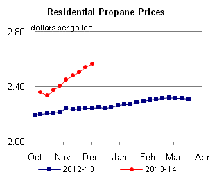
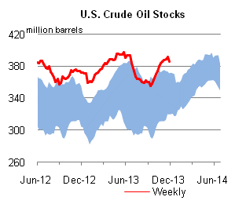

Released: December 4, 2013
Next Release: December 11, 2013
U.S. exports of distillate fuel rise 30% on global demand
U.S. exports of distillate fuel reached a monthly record of 1.4 million barrels per day (bbl/d) in July, and averaged more than 1.3 million bbl/d during third-quarter 2013 (September is the last month for which export data are available). This level is up 30% from 1.0 million bbl/d during third-quarter 2012 and from 0.3 million bbl/d during that period in 2007 (Figure 1).
Continuing growth in global distillate consumption has encouraged exports, which have supported high levels of U.S. refinery runs and increased backwardation (when future prices are lower than prompt prices) during the past two summers on the New York Mercantile Exchange (Nymex) heating oil futures curve.
{kind=link}
Global distillate demand, which the International Energy Agency (IEA) expects to be 27.0 million bbl/d in 2013 (measured as gasoil/diesel demand, a category similar to EIA's distillate fuel), has been a key component of the growth in global liquid fuels demand following the 2008-09 global recession. After declining briefly in 2009, gasoil/diesel demand will have increased 2.4 million bbl/d (10%) from 2009 through year-end 2013, according to the IEA. Almost all of this growth was driven by economic expansion in the emerging economies of the non-OECD countries. Distillate fuel use tends to be highly correlated with economic growth, especially in manufacturing. Despite strong global growth, U.S. distillate consumption slumped in recent years, with 2012 annual consumption at 3.7 million bbl/d, a 460,000-bbl/d decline from 2007. Distillate consumption declined as a result of fewer heavy-duty truck miles traveled, along with fuel efficiency gains in the rail and marine vessel fleets. U.S. distillate consumption rose modestly during the first three quarters of 2013 and is expected to average 90,000 bbl/d more for full-year 2013 than in 2012.
This global distillate demand growth has helped support U.S. refinery runs. U.S. refiners increased distillate exports in recent years partly because of the smaller domestic distillate market; however, exports have increased by more than demand has declined, and even with modest U.S. demand growth in 2013, exports have continued to increase. Increased distillate exports reflect the competitive advantage of U.S. Gulf Coast refiners, which have supplied almost 80% of U.S. distillate exports during the first nine months of 2013.
Among Gulf Coast refiners' competitive advantages are the region's access to competitively priced natural gas and crude oil inputs; significant coking capacity to produce more high-value products from a barrel of crude; and easy access to Latin American markets, which are short of distillate fuel. On the back of these advantages, U.S. refinery gross inputs averaged 16.3 million bbl/d during third-quarter 2013, with inputs exceeding 16.5 million bbl/d for the week ending July 12, the highest of any week since 2005. Likewise, refinery utilization has averaged almost 88% in 2013, up from an average of 86% for the five previous years.
Increasing global demand for distillate fuel has also changed the term structure of the Nymex heating oil futures curve, which has shifted incentives away from holding inventory and toward exporting. When the global call on U.S. distillate fuel was smaller than it is today, the term structure of the Nymex heating oil futures was heavily influenced by the heating-related winter increase in distillate demand in the U.S. Northeast. During the summer, when refineries ramp up runs to supply increased driving-related demand for gasoline, heating oil demand is lower. Without a strong demand pull from export markets, the additional production of distillate during the summer months had no immediate market and the futures curve would typically move into strong contango (when future prices are higher than prompt prices), encouraging inventory building to meet winter demand.
As global distillate demand has grown and exports of distillate from the United States have increased, and as U.S. consumption of heating oil has decreased, the seasonality of the U.S. distillate market has waned. Demand for distillate outside the United States has little seasonality. This decreased seasonality of the distillate market has flattened the Nymex heating oil futures curve. For 2012 and 2013, on trading days from June through August, the average spread between the first contract and the fourth contract was -2 cents per gallon and -1 cent per gallon, respectively. For the previous five years, that spread averaged -7 cents per gallon. The reduced spread indicates that it is more economical to sell refinery production promptly, either into the export market or for domestic consumption, rather than to hold it in inventory for future consumption. Accordingly, inventories of distillate fuel have been at or near the bottom of the five-year range since mid-2012 (Figure 2).
{kind=link}
The extent to which U.S. distillate exports will continue to grow depends on several factors, perhaps the most important of which is the pace of global refinery capacity expansions. About two-thirds of U.S. distillate exports during the first nine months of 2013 were to Central and South America and Mexico. That share is similar to the same period in 2007, as these regions have been short of distillate fuel. If refinery capacity expands as planned over the next several years, either in Latin America or in other regions such as the Middle East, U.S. refiners could face increasing competition in distillate export markets. However, in the short term, the competitive advantages of Gulf Coast refiners should continue to support their current strong position within the global market.
Gasoline prices decrease while diesel fuel increases
The U.S. average retail price of regular gasoline decreased two cents to $3.27 per gallon as of December 2, 2013, 12 cents lower than last year at this time. Prices rose two cents on the West Coast to $3.48 per gallon, and less than a penny on the East Coast to remain at $3.39 per gallon, while falling in all other regions of the nation. The largest decrease came in the Midwest, where the price decreased seven cents to $3.12 per gallon. In the Rocky Mountains the price was $3.11 per gallon, a drop of three cents from last week, and the Gulf Coast price was two cents lower at $3.12 per gallon.
The national average diesel fuel price increased four cents to $3.88 per gallon, 14 cents lower than last year at this time. Prices increased in all regions of the nation, with the largest increase coming in the Midwest, where the price was up five cents to $3.88 per gallon. The East and West Coast prices both were up four cents, to $3.91 per gallon and $4.00 per gallon, respectively. On the Gulf Coast the price was $3.78 per gallon, a gain of three cents, and the Rocky Mountain price rose two cents to $3.86 per gallon.
Propane inventories fall
U.S. propane stocks fell by 2.7 million barrels to end at 54.3 million barrels last week, 18.2 million barrels (25.1%) lower than a year ago. Gulf Coast regional inventories dropped by 2.2 million barrels, and Midwest inventories decreased by 0.4 million barrels. East Coast and Rocky Mountain/West Coast inventories remained unchanged from the previous week. Propylene non-fuel-use inventories represented 5.5% of total propane inventories.
Residential heating fuel prices increase
Residential heating oil prices increased by almost 3 cents per gallon last week during the period ending December 2, 2013 to nearly $3.92 per gallon. This is 11 cents per gallon lower than last year's price at this time. Wholesale heating oil prices were virtually unchanged last week, remaining at $3.15 per gallon.
The average residential propane price increased by 2 cents per gallon last week to just below $2.57 per gallon, 32 cents per gallon higher than the same period last year. Wholesale propane prices decreased by 2 cents per gallon to $1.41 per gallon as of December 2, 2013.
Text from the previous editions of This Week In Petroleum is accessible through a link at the top right-hand corner of this page.
|  | |||||||
| Retail Data | Change From Last | Retail Data | Change From Last | ||||
| 12/02/13 | Week | Year | 12/02/13 | Week | Year | ||
| Gasoline | 3.272 | Heating Oil | 3.917 | ||||
| Diesel Fuel | 3.883 | Propane | 2.565 | ||||
|
|||||||||||||||||||||||||||
| *Note: Crude Oil Price in Dollars per Barrel. | |||||||||||||||||||||||||||
|  | |||||||
| Stocks Data | Change From Last | Stocks Data | Change From Last | ||||
| 11/29/13 | Week | Year | 11/29/13 | Week | Year | ||
| Crude Oil | 385.8 | Distillate | 113.5 | ||||
| Gasoline | 212.4 | Propane | 54.275 | ||||